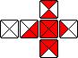
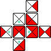

Hako is a 2-players dice game.
Hako is played with eight six-sided dice, each of the six faces is unique and painted as four triangles with two different colors.
The fully clear side is called day, the fully painted is called night, the side with two connected triangles is called dusk, the side with two disconnected triangle is called dawn, the remaining sides are called null-moon or full-moon.
How to Play
Players each pick a color, and begin with four dice. Each turn, a player rolls a die and try to surround a die in play, with four triangles of its own color.
After playing their last die, players must pick one in play which was not played last, and that does not create a floating die. A floating die is has no immediate non-diagonal neighbor. The game ends when a player surrounds a die with four triangles of their color.
In this example game, the player with the unpainted triangles wins.
The name Hako is the hexadecimal number 18, in Bibi Binary, which is the total number of faces on a Hako die. A paper Hako dice can be made from a sonobe 6. The game was originally played by the Iridi people in Wiktopher. The Iridi die is a painted stone.